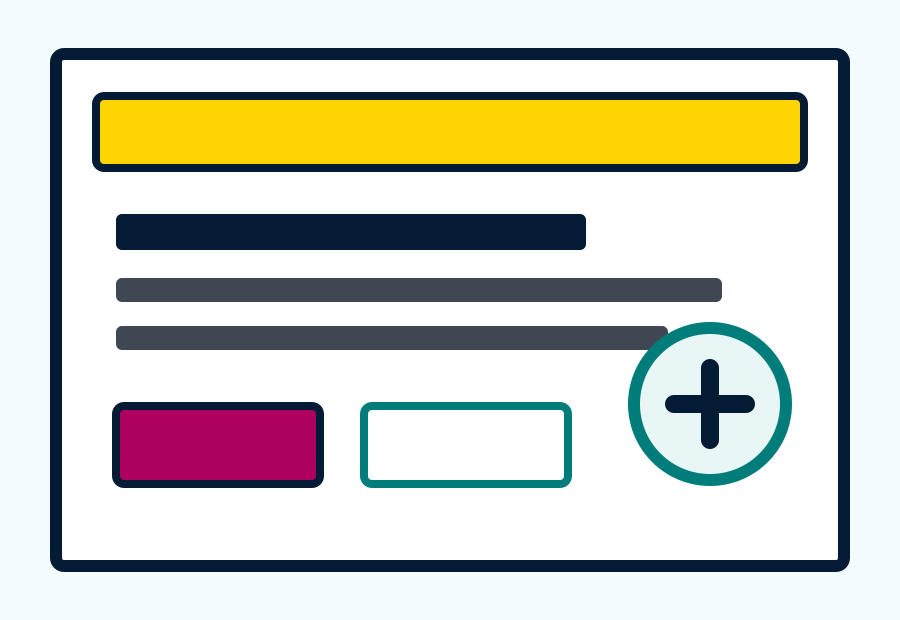
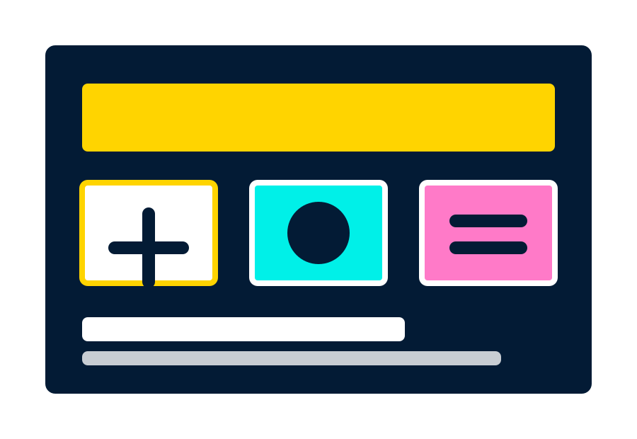
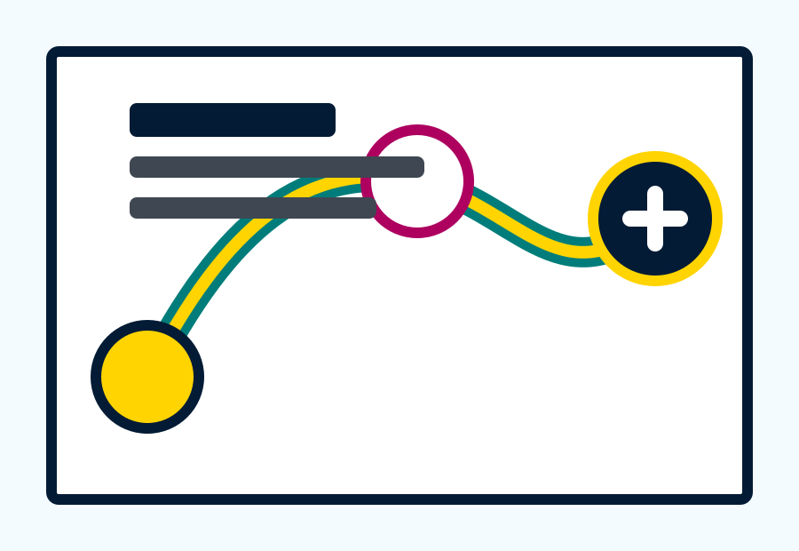

01
Mulai dari fokus yang besar.
Judul, tombol, dan ringkasan ditempatkan di area yang mudah dipindai. Warna aksen dipakai untuk menuntun perhatian, bukan menjadi satu-satunya penanda.
Lanjut ke dukungan visual
Untuk pengguna disabilitas low vision
Ruang baca digital yang terang, kontras, dan mudah dinavigasi agar informasi terasa dekat untuk semua mata.
Kontrol Tampilan
Pengguna dapat memperbesar huruf, menaikkan kontras, dan memberi jarak ekstra pada teks tanpa keluar dari halaman.
Pengalaman Baca
Setiap bagian memakai hierarki tegas, kalimat pendek, dan visual pendukung agar pengguna low vision tidak perlu menebak posisi informasi penting.
Judul, tombol, dan ringkasan ditempatkan di area yang mudah dipindai. Warna aksen dipakai untuk menuntun perhatian, bukan menjadi satu-satunya penanda.
Lanjut ke dukungan visual
Ilustrasi diberi batas kuat, caption singkat, dan teks alternatif. Pengguna tetap mendapat makna meski melihat halaman dengan zoom tinggi atau pembaca layar.
Lanjut ke navigasi
Navigasi memakai label teks, area klik besar, dan indikator fokus yang kontras. Halaman tetap rapi ketika dibuka di ponsel, tablet, atau desktop.
Lihat Fitur Utama
Fitur Low Vision
Desain ini menyeimbangkan tampilan modern dengan kebutuhan aksesibilitas: kontras kuat, ruang baca lega, dan komponen yang mudah disentuh.
Ukuran teks utama dibuat nyaman sejak awal dan masih bisa diperbesar lewat kontrol tampilan.
Palet warna memakai batas dan latar yang jelas supaya teks, tombol, dan link tidak tenggelam.
Tombol dan menu diberi tinggi cukup besar untuk mouse, layar sentuh, dan navigasi keyboard.
Setiap elemen interaktif menampilkan outline kuning tebal saat dipilih dengan keyboard.
Standar Praktis
Mulai dari sini
Struktur halaman sudah siap untuk cerita, informasi layanan, panduan kesehatan, atau materi edukasi yang perlu ramah low vision.